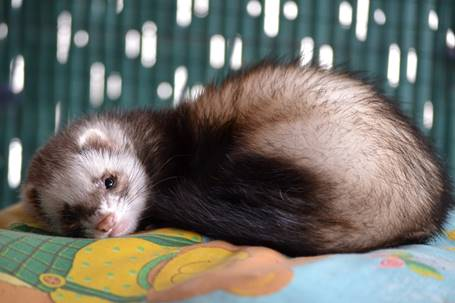
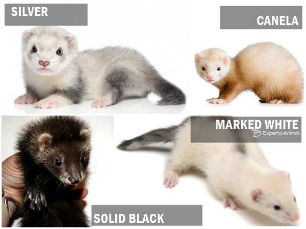

HURONES
El hurón es un mamífero carnívoro que cuenta con un instinto de
cazador, pues esta es su naturaleza. No obstante, en contra de lo que se pueda
pensar, fue domesticado hace aproximadamente 2500 años con el objetivo de cazar
conejos.
Índice
La
naturaleza del hurón en el ámbito doméstico
El hurón es un animal
que desprende gran energía y vitalidad, además, es un excelente animal de
compañía, pues posee un carácter muy juguetón y le encanta
compartir momentos de ocio con su familia humana. Obviamente, como muchos otros
animales, requiere de presencia y dedicación diarias.
La
interacción del hurón con sus propietarios brindará grandes momentos, pues
estos animales son tan sociables como inteligentes y su
comportamiento es complejo. El hurón no puede compararse a un animal que
requiera cuidados mínimos, más bien acoger a un hurón se asemeja a compartir el
hogar con un perro o un gato.
El
hurón es capaz de
aprender su nombre y responder al llamado de su dueño, del
mismo modo puede adaptarse a pasear con correa, a mantenerse quieto sobre
nuestros hombros e incluso tiene la capacidad de abrir puertas.
Si buscas a
una mascota sociable, divertida y juguetona, el hurón puede ser el
animal de compañía más idóneo para ti.
¿Qué
necesita un hurón doméstico?
Si estamos
dispuestos a acoger a un hurón como mascota debemos tener en
cuenta que este animal posee unas necesidades básicas y que es nuestra
responsabilidad brindarle un entorno en el que pueda experimentar un pleno estado de bienestar.
Antes de
adoptar a un hurón te recomendamos tener en cuenta las siguientes
consideraciones:
Si estás
dispuesto a cumplir con estas premisas básicas con las que debe
comprometerse cualquier propietario de un hurón, entonces es el momento de
hablar de los cuidados veterinarios, los cuales también resultarán
imprescindibles para tu hurón.
Cuidados
veterinarios del hurón doméstico
Como hemos mencionado anteriormente, es
imprescindible que el hurón se someta a un programa de vacunación que
se iniciará a partir de los 2 meses de vida y que incluirá vacunas contra la
rabia y el moquillo, la administración de las cuáles se deberá repetir de forma
anual.
El hurón
también deberá someterse de forma periódica a medidas preventivas contra
las enfermedades
más comunes en él, como aquellas empleadas para repeler a los
mosquitos que pudieran transmitir la enfermedad del gusano del corazón.
Obviamente
ante signos de enfermedad debemos acudir con la mayor antelación posible a un
centro veterinario, sospecha de una posible patología si observas
alguno de los siguientes signos en tu hurón:
Del mismo
modo resulta muy importante contactar con un veterinario especializado
en hurones, ya que así podremos brindar la mejor atención sanitaria a
nuestra mascota.
Tamaño del
hurón
Si te
gustan los hurones seguros habrás observado que existen de diferentes tamaños y
es que efectivamente así es. Eso sí, solo podremos afirmar el tamaño de un
hurón cuando este sea ya adulto. Podemos clasificarlos en tres grandes grupos:
·
El whippet es
el hurón más pequeño de todos los que existen. Procede de Estados Unidos y
tiene la cabeza pequeña y alargada.
·
El hurón estándar es el más común
y habitual: procede de Europa y fue utilizado durante siglos para la caza del
conejo.
·
El bull es
sin duda el hurón más grande y corpulento. Destaca por tener las patas cortas,
la cabeza ancha y el pecho voluminoso. Proceden del norte de Europa.
Colores
del hurón
Además
del tamaño de un hurón también podemos clasificarle mediante su color y es que
existen cuatro parámetros que nos permitirán definirlo:
Según el color de base:
·
sable
·
sable negro
·
black
·
chocolate
·
champán
·
canela
·
albino
·
DEW
·
plata
·
marcado plata
Según el patrón de distribución del color:
·
estándar
·
siamés
·
ruano
·
self
·
sólido
Existen también patrones de blanco:
·
babero
·
guantes
·
calcetines
·
arlequín
·
blazze
·
panda
·
polkadott
·
boca de leche
·
rodilleras
·
tip
Finalmente pueden presentar antifaz:
·
en V
·
en T
·
incompleto
·
sin antifaz
Pelaje del
hurón
Finalmente
y ya para terminar con la clasificación de los hurones según sus
características físicas debemos saber que nos encontramos con tres tipos de
pelaje. El más común de todos ellos es el pelo corto o estándar ya que la
mayoría de los hurones lo presentan.
·
Pelo corto o estándar
·
Pelo largo
·
Angora
La muda en
los hurones domésticos
Los hurones mudan el pelo
cuatro veces al año. La mejor calidad de pelo se produce al inicio del
invierno cuando sucede la primera muda y es que luce muy hermosa.
Cuando
se acerca la primavera el pelo empieza a despoblarse para enfrentar el próximo
calor. Al llegar al verano pierden mucho más pelo para refrigerarse al máximo.
Iniciándose el otoño el hurón empieza a repoblar su pelo y reiniciar el proceso
natural de muda capilar.
Los
hurones domésticos también experimentan mudas de pelo, pero bastante más suaves
que sus congéneres salvajes, cuya vida está expuesta a cambios de temperatura
mucho más radicales.
Es
conveniente cepillar con frecuencia y un cepillo de espesas
cerdas suaves a vuestro simpático hurón doméstico. En primer lugar cepilladlo a
contrapelo con movimientos cortos y rotando la muñeca un cuarto de vuelta para
levantar el pelo muerto.
Una
vez terminado el cepillado preliminar a contrapelo, realizarlo a favor de la
dirección del pelo con suavidad y movimientos largos. Previamente habréis
eliminado el pelo muerto procedente del primer cepillado y acumulado en el
cepillo. Lo podéis realizar mediante un peine en desuso.
Cepillado
del pelo en los hurones.
El hurón es un mustélido. Por lo
tanto, es un animal con la agresividad propia de dicha especie. Afortunadamente
para los humanos, dicha ferocidad está sabiamente constreñida por la Madre
Naturaleza en unos cuerpos pequeños. Y el hurón es uno de los menores.
El
hurón doméstico, además, está nacido en cautividad y acostumbrado al contacto
con los humanos desde el primer instante. Aunque la carga genética no debe
menospreciarse.
Por
todo ello, esta información previa debe prevenirnos para su correcta
manipulación durante el cepillado. No debemos hacerle daño con peines o
cepillos incorrectos, o con un exceso de fuerza que le provoque incomodidad.
Si
lo manipulamos de forma incorrecta el hurón no dudará en revolverse de forma
fulgurante y arrearnos un doloroso mordisco con sus afilados dientecillos.
Caída
del
pelo del hurón por otras causas
Los
hurones pueden llegar a perder pelo por motivos ajenos a la muda. Una mala
alimentación es una causa habitual. Los hurones son carnívoros y precisan una
dieta en la cual un porcentaje aproximadamente del 32-38% sean proteínas
animales. Necesitan un aporte de grasas animales cercano al 15-20%.
Las
proteínas de origen vegetal, como la soja, no son metabolizadas correctamente
por el organismo del hurón. Vuestro veterinario os informará correctamente
sobre la alimentación específica de vuestro hurón. Es dañino sobrealimentarlos.
Otro
motivo por el cual vuestro hurón sufra pérdida anómala del pelo es que el
animal no duerma de forma idónea. El hurón es crepuscular, o sea que su máxima actividad se desarrolla desde el atardecer
hasta el alba. Durante las 10-12 horas en las que duerme, precisa estar
en oscuridad absoluta para absorber la melanina precisa para que su
salud no se resienta. El dormir deficientemente puede causarle trastornos que
le provoquen la muerte.
Video
para saber más de los hurones: https://www.youtube.com/watch?v=gLJd4nNt3LA